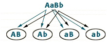

Dihybrid Cross
Problem 7: Homozygous offspring of a dihybrid cross.
Tutorial to help answer the question
In a dihybrid cross, AaBb x AaBb, what fraction of the offspring will be homozygous for both recessive traits?
Predicting the genotype of offspring
|
There are four possible combinations of gametes for the AaBb parent.
Half of the gametes get a dominant A and a dominant B allele; the other half of the gametes get a recessive a and a recessive b allele. Both parents produce 25% each of AB, Ab, aB, and ab. (Review problem #3's tutorial if necessary). |
 |